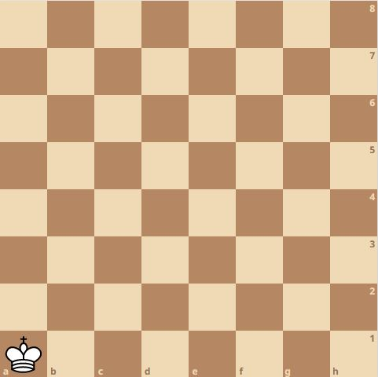

Q6: Kingwalk

“No King shall rule a king with runes and gold and a mug with rich
values!"
Akash is a jolly young man looking for all three - hence his utmost respect for you. But now you're in a pinch; only the two of you have taken this detour. With his fists and shovel, he can easily break down the stone wall standing tall before you. This whimsical chap has proposed that you beat him in a fun chess variant to make him work.
“Gah, the gall!" you curse in your mind as you prepare to beat him. You are given the option to go first or second - what will you choose? Can you even win? A wrong decision and you follow him.
Akash is a jolly young man looking for all three - hence his utmost respect for you. But now you're in a pinch; only the two of you have taken this detour. With his fists and shovel, he can easily break down the stone wall standing tall before you. This whimsical chap has proposed that you beat him in a fun chess variant to make him work.
“Gah, the gall!" you curse in your mind as you prepare to beat him. You are given the option to go first or second - what will you choose? Can you even win? A wrong decision and you follow him.

A king is placed on the a1 square (bottom left) of a chessboard.
Two players take turns moving the king. In each turn, the king can move
in one of three ways: one square upwards, one square to the right, or
one square diagonally up and right. The player who ends up placing the
king on the h8 square (top right) wins. Assuming perfect play
from both sides, is the game decisive? If it is, who wins?
If you think that the game is not decisive, you should answer
draw. If you think that the player who goes first wins,
answer first, and if you think that the player who goes second
wins, answer second.